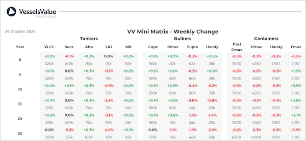

Bulkers: VV Bulker values have mostly remained stable this week, with smaller older tonnage seeinga decrease due to sales such as Bulk Freedom.
Kamsarmax BC Generosity (83,500 DWT, Mar 2011, Sanoyas) sold to CTM SAM for USD 17 mil, VV Value USD 17.02 mil
Supramax BC Bulk Freedom (52,500 DWT, Jan 2005, Tadotsu Tsuneishi) sold to undisclosed buyers for USD 9.6 mil, VV Value USD 9.75 mil
Handy BC Danship Bulker (28,300 DWT, Feb 2009, I-S) sold to unknown Vietnamese buyers for USD 8.8 mil, VV Value USD 8.72 mil
Tankers:This week’s S&P market was among October’s busiest, with 14 transactions evenly split across clean and crude segments and covering the full age spectrum. Liquidity was driven by Suezmax and MR2 trades, while VLCCs contributed more modestly, skewing towards older 2004-2010-built units.
VLCC Singapore Loyalty (307,300 DWT, Oct 2007, Dalian Shipbuilding Ind Corp) was sold by Sinokor (DD Due) for USD 47 mil, VV Value USD 44.4 mil
Suezmax Seavoyager (159,200 DWT, Jul 2007, Hyundai Samho HI) was sold by Thenamaris (DD Passed) for USD 37.5 mil, VV Value USD 33.26 mil
Suezmax Euroleader (159,100 DWT, Feb 2005, Hyundai Heavy Ind Ulsan Shipyard) was sold by Eurotankers USD 28.5 mil, VV Value USD 28.46 mil
LR1 Chemtrans Cancale (73,600 DWT, Jun 2007, New Century) was sold by Pareto Maritime Securities (DD Due) for USD 12 mil, VV Value USD 13.56 mil
MR2 (Chemical/Product) Petite Soeur (50,400 DWT, Jul 2011, Guangzhou Shipyard International) sold to Indian buyers for USD 19 mil, VV Value USD 19.92 mil
Containers:Midage Feedermax values have been increasing this week.
No notable sales
